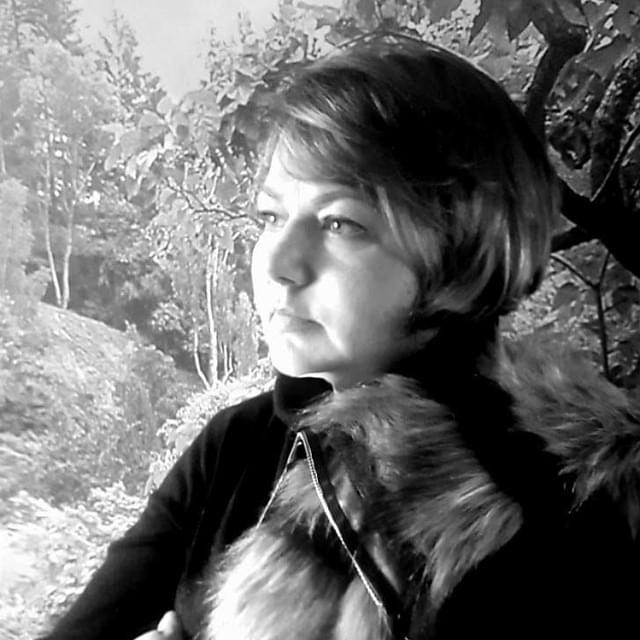

Реализоваться в сферах карьеры, финансов, здоровья, отношений.
ЧТО ПОЛУЧИТЕ
Научитесь читать натальную карту
Научитесь понимать себя и своих близких
Прокачаете все самые важные сферы в жизни
Хотите стать астрологом – консультантом
Вы хотите освоить инструмент практической астрологии, чтобы помогать другим людям
Хотите получить новый способ заработка
ЧТО ПОЛУЧИТЕ
Начнете консультировать без страха и упрека
Освоите алгоритм компенсаторной астрологии
Создадите стратегию развития для выхода на новый уровень
Формат обучения
Длительность курса 7, 5 месяцев
28 уроков в записи + 14 практических занятия (2 раза в месяц)
Методические материалы к урокам
Индивидуальные учебные сессии в рамках тарифа «VIP»
Обратная связь:
Проверка домашних заданий преподавателем
Чат с преподавателем и участниками курса
Программа курса
I модуль
1. Космограмма и гороскоп – психология и событийность. Структура космограммы и гороскопа: планета, знак, синетический знак, канал, поле, дом, управитель, диспозитор, аспект - 2 урока
2. Кармическое предназначение. Программа духа и программа тела. Астрологическая концепция развития личности. Лунные узлы
3. Теория аспектов. Чтение аспектов в динамике и статике. Алгоритм самостоятельного толкования аспектов. Сила аспекта. Гармоничные и напряженные аспекты
4. Луна – моё место в мире. Функции Луны. Интерпретация в знаках, аспектах, домах. Алгоритм компенсации. Астрологическое предложение
5. Солнце – источник энергии и ресурсов. Интерпретация в знаках, аспектах, домах. Алгоритм компенсации
6. Солнце – источник энергии и ресурсов. Интерпретация в знаках, аспектах, домах. Алгоритм компенсации
7. Меркурий – проводник информации и коммуникации. Интерпретация в знаках, аспектах, домах. Алгоритм компенсации
8. Венера – отношение к деньгам, партнерство. Интерпретация в знаках, аспектах, домах. Алгоритм компенсации
9. Марс – воля и действие. Интерпретация в знаках, аспектах, домах. Алгоритм компенсации
10. Социальные планеты Юпитер и Сатурн – правила, мораль и ценности. Интерпретация в домах. Алгоритм компенсации
11. Высшие планеты – суперспособности и связь с космосом. Интерпретация в домах. Алгоритм компенсации
12. Черная Луна – слепое пятно натальной карты. Уровни проявления. Интерпретация в знаках и домах. Методы компенсации
13. Нюансы натальной карты. Сила планет. Планета в шахте, планета в осаде, падение, ретроградность, критические градусы, ангуляр, двойное управление
II модуль
14. Дома гороскопа. Сила и гармоничность дома. Этажи дома
15. Альмутен (управитель) дома. Управитель в домах. Управитель гороскопа
16. Домарная и планетарная цепочки диспозиций – невидимая связь в психике и событийности
17. Конфигурации аспектов
18. Связи домов. Формулы событий как жизненный сценарий. Как вехи судьбы
19. Тематический анализ дома – основа для интерпретации жизненно важных сфер
20. Компенсаторика по-взрослому. Виды компенсации и алгоритм подбора компенсаторных мер
21. Сила рода, родовые сценарии. Родовые дома. Кармические задачи перед родом
22. Астрология здоровья. Диагностика здоровья по карте
23. Астрология личной жизни
24. Профориентация. Как и где реализовать себя и жить по кайфу
25. Финансы в натальной карте. Алгоритм расширения финансового потока
26. Детский гороскоп. Нюансы детской натальной карты. Как задать продуктивный вектор развития для ребенка
27. Практика и еще раз практика!
ВЫБЕРИТЕ ФОРМАТ УЧАСТИЯ
Базовый
29 900 руб или 5900 руб/месяц
Только до 25 июля! С 26.07 только помесячная оплата. Поделите 29900 на 7, 5 месяцев получается 4000 руб/месяц, очень приятная цена
42 урока (28 теория + 14 практика)
Методические материалы
Проверка заданий преподавателем
Чат с участниками курса и преподавателем
Участие в закрытой группе ВК
Сертификат после экзамена
Доступ к лекциям на 1 год
Сопровождение от Елены
VIP
49 900 руб или 7900 руб/месяц
42 урока (28 теория + 14 практика)
Методические материалы
Проверка заданий преподавателем
Чат с участниками курса и преподавателем
Сертификат после экзамена
Участие в закрытой группе ВК
Доступ к лекциям на 2 года
Сопровождение от Елены
Персональный чат с Еленой
7 индивидуальных практических занятий в течение 7 месяцев
Помощь в подготовке к итоговому экзамену
Помощь в подготовке и проведении первых двух консультаций
ОБУЧЕНИЕ ПРОВОДИТ ЕЛЕНА СВЕТЛОВА
Дипломированный астролог, астропсихолог
Основатель школы астрологии, где в течение 5 лет проходил курс «Формула Души»7 лет практики в астрологии27 лет педагогической практикиПедагогика – это мое призвание и любовь!Я умею доносить сложное простым языком коротко и информативно
Отзывы
Динара Гильмутдинова
Хочу выразить благодарность Елене за курс по ФД. Столько информации не найдёте нигде, все доступно, понятно, простым языком, то что нужно, особенно новичкам как я. А с каким багажом знаний я закончила обучение! Раньше я скептически относилась к астрологии, а сейчас я иду на след курс. Елена влюбила меня в эту науку. Очень комфортно и приятно у неё учиться!

Алла Голдина
Лена большое спасибо за курс по связкам планет! По формуле души я проходила очень много курсов, но каждый раз бросала эту тему, так как не было полноценного понимания курса. Сожалею только об одном, что не попала именно к Вам на курс в самом начале своего обучения, столько времени зря потеряно... Никто ни разу не объяснил так доходчиво и чётко как толковать связки планет. Информация по курсу дана безо всякой "воды", лаконично и понятно. По-возможности, буду проходить и другие Ваши курсы, чего и всем желаю. Потому, что таких преподавателей как Лена, просто единицы, но радостно, что все же Вы есть. Ещё раз большое, человеческое СПАСИБО
Юлия Самадзе
Тоже хотела бы выразить свою благодарность Елене за такой доступный для начинающий и, в тоже время, глубокий курс, который заразил меня любовью к астропсихологии, а в последствии - и к астрологии Очень понравился формат видеоуроков, как маме в декрете не всегда удобно подстраиваться под определенное время, а так можно просматривать уроки, когда появляется свободная минутка И самое главное - возможность при личной беседе обсудить и закрепить материал на практике! Если вы наверняка решили освоить эту замечательную методику, очень рекомендую пройти курс именно у Елены. Это глубокое погружение в астропсихологию и основы астрологии. Вас познакомят с тем, как проявляют себя планеты в разных знаках, какие аспекты образовывают между собой и как это все отражается на психологическом портрете личности. Думаю, более глубоким этот курс сделать невозможно) Елена щедро делиться своими знаниями и к ней всегда можно обратиться за советом! Ещё раз благодарю
ПОЧЕМУ СТОИТ ПРОЙТИ ОБУЧЕНИЕ ИМЕННО У МЕНЯ
Компенсаторика
Мало научиться читать натальную карту! Нужно еще знать, как «минусы» перевести в «плюс»
Наличие практик
В домашних заданиях и онлайн вебинарах на ваших картах
Комфорт и удобство
Возможность учиться в любом удобном для вас режиме с любых устройств.
Постоянный контакт с преподавателем
Закрытая группа + чат. Я уделяю внимание каждому заинтересованному ученику.
Невысокая цена в сегменте
При этом информативные, четко структурированный лекции длительностью 2-3 часа + практика!
Бесплатный бонус
Оплатив обучение до 31 июля в ПОДАРОК курс «Аспекты» стоимостью 10890 руб
Часто задаваемые вопросы
КАК ОПЛАТИТЬ КУРС?
Выберите удобный для Вас тариф. Выберите оплату сразу или ежемесячно (с 15 по 19 число каждого месяца). Кликните «перейти к оплате». Оплатите курс. Сделайте скрин и пришлите в ЛС. Instagram astrolog.svetlova
ЕСЛИ ДО ЭТОГО Я НЕ ИЗУЧАЛА АСТРОЛОГИЮ, БУДЕТ ЛИ МНЕ ПОНЯТНО?
Курс подходит для тех, кто пришел в астрологию «с нуля». А также есть поддержка преподавателя, что не понятно, всегда можно решить.
КОГДА СТАРТ КУРСА И СКОЛЬКО ПО ВРЕМЕНИ ДЛИТСЯ?
Начало курса 20 августа. Длительность курса 7, 5 месяцев.
НУЖНЫ ЛИ КАКИЕ-ТО ДОПОЛНИТЕЛЬНЫЕ МАТЕРИАЛЫ
Нет. Все необходимое для обучения будет в доступе.